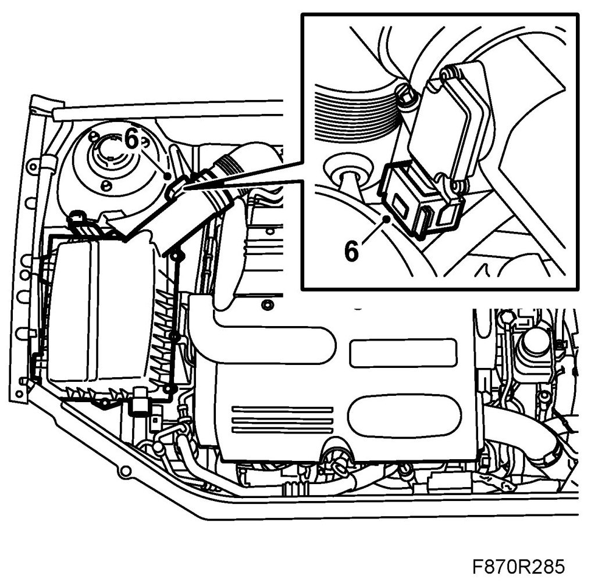
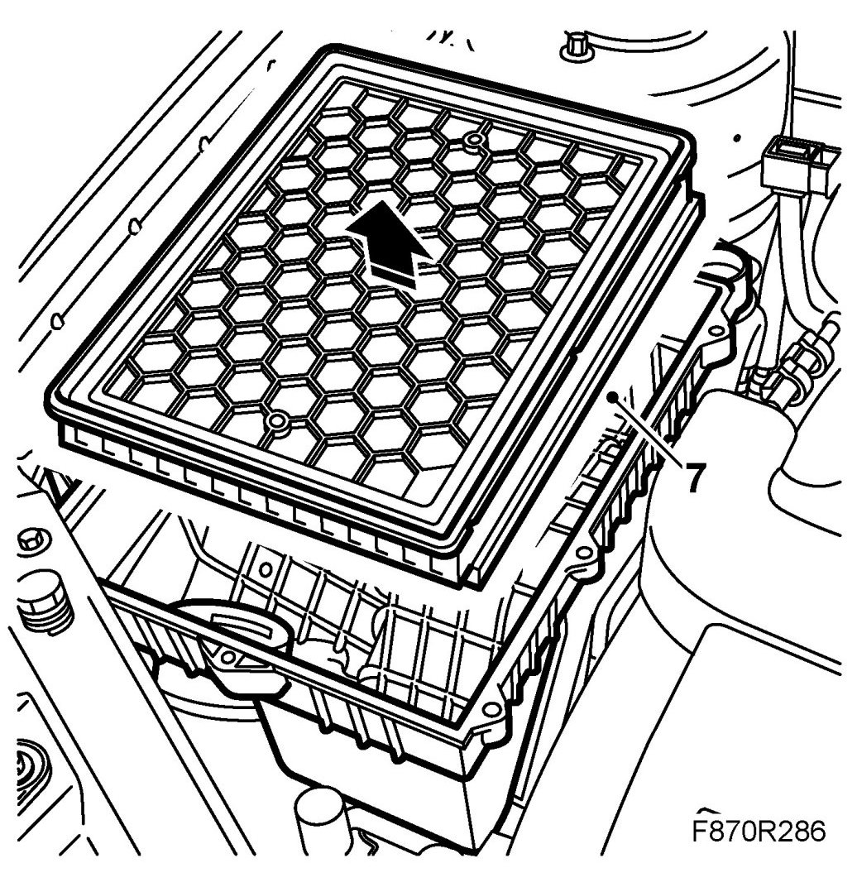
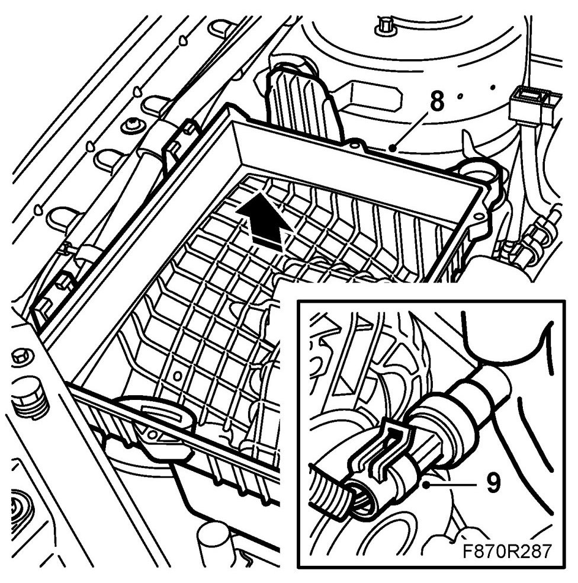
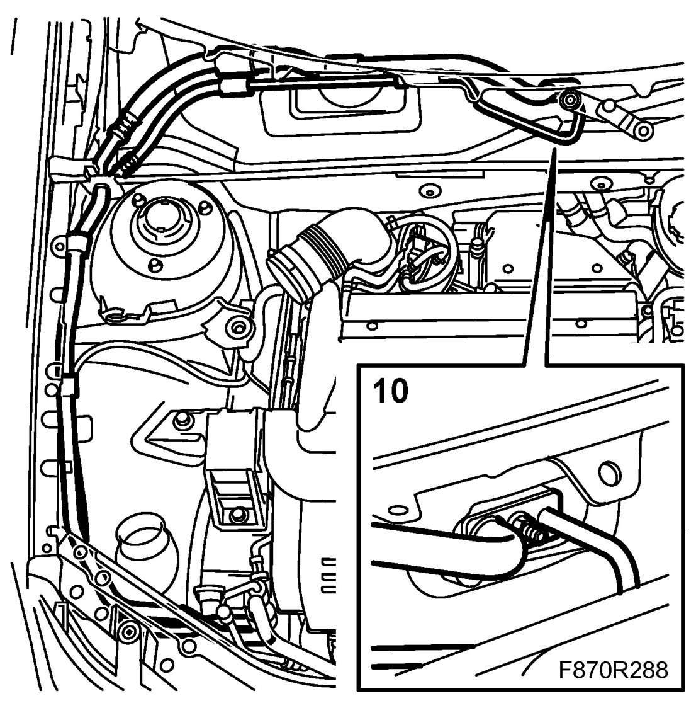
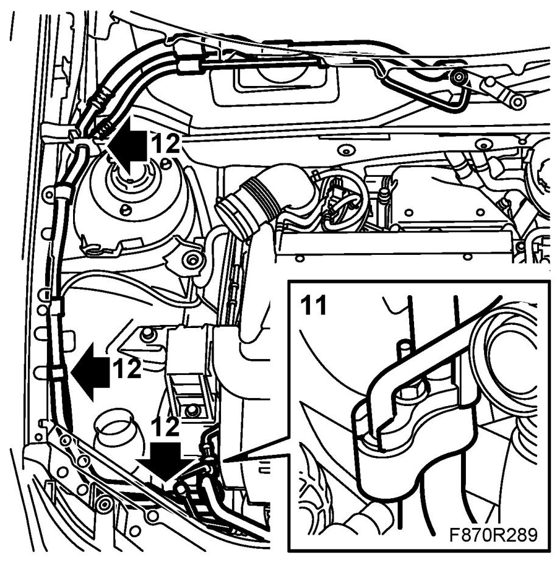
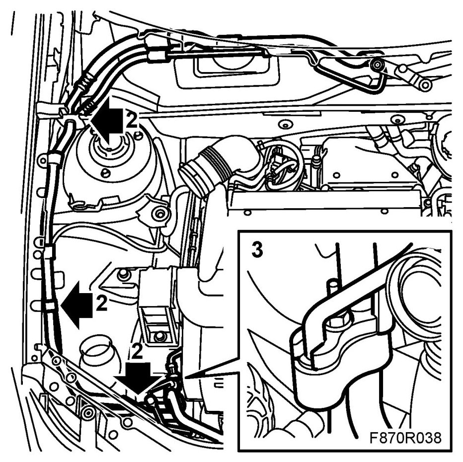
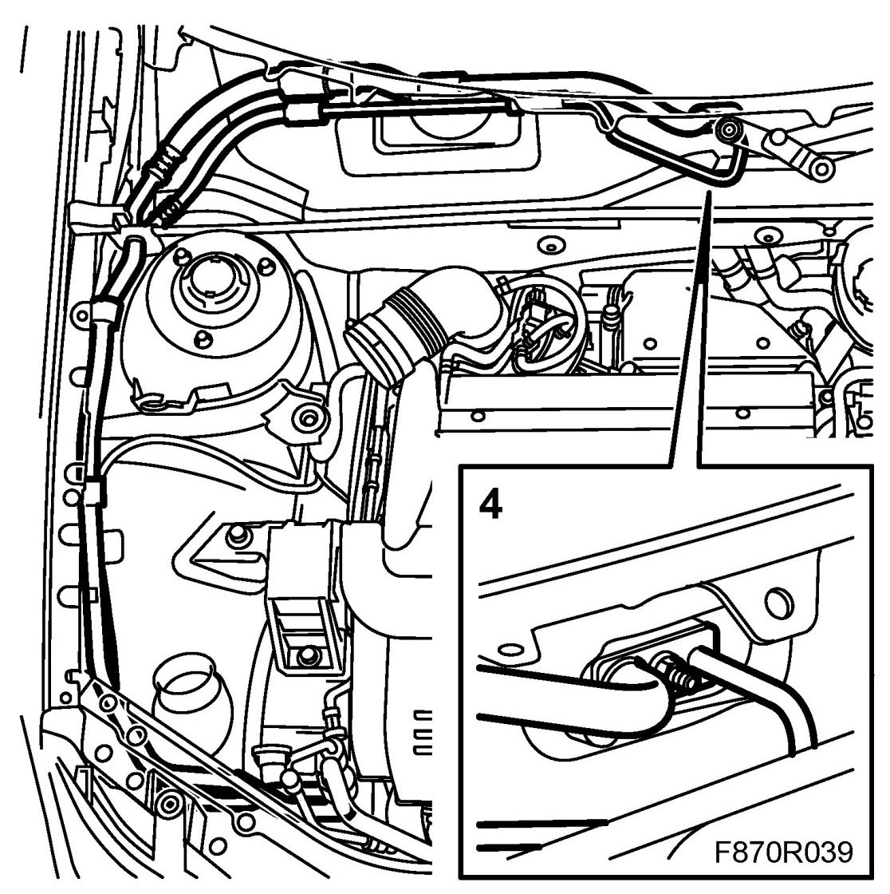
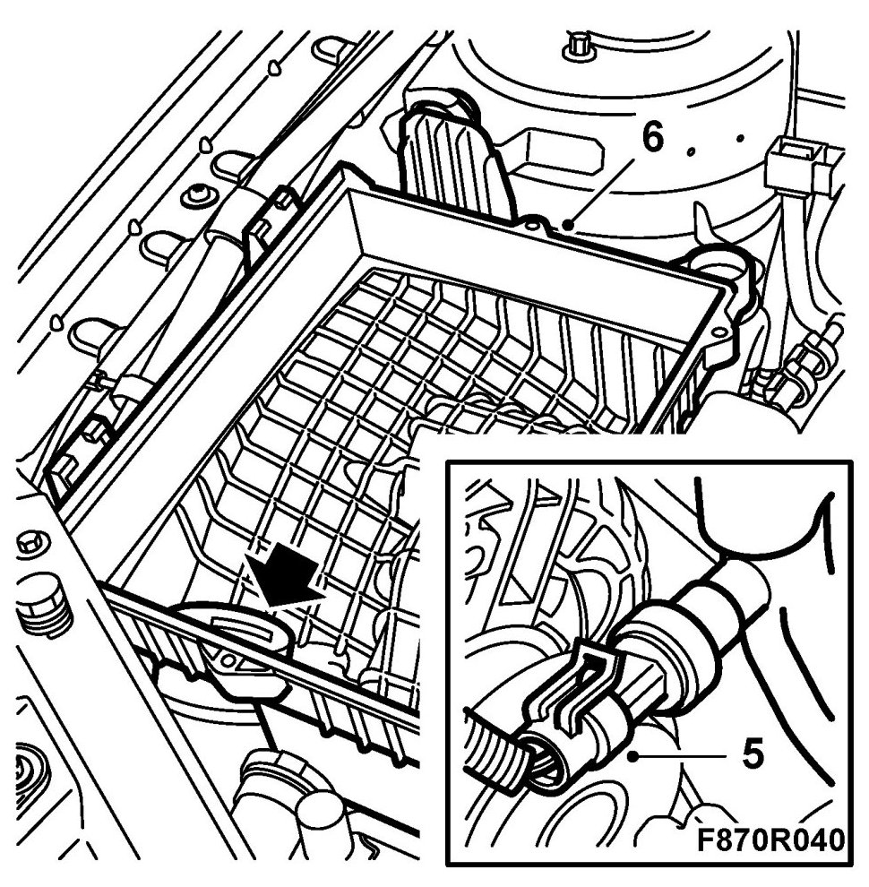
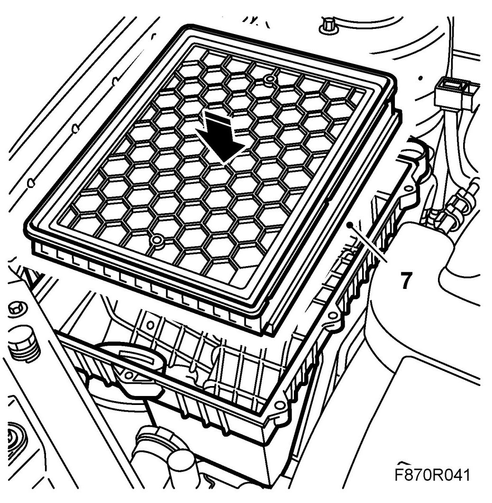

Evaporator's High and Low-Pressure Pipes, B207
Evaporator's High And Low-pressure Pipes, B207
IMPORTANT: The A/C receiver and the compressor oil absorb moisture from the air, which can then not be removed. Plug all connections that are opened immediately.
To remove
1. Drain the refrigerant from the system.
2. Remove the windscreen wipers, use 85 80 144 Puller, windscreen wiper arm.
3. Remove the Bulkhead cover.
4. RHD: Remove the Windscreen wiper assembly.
5. LHD: Remove the fresh-air filter and fresh-air filter housing.
6. Remove the hose between the turbo inlet pipe and the turbo.
Remove the mass air flow sensor connector.

7. Remove the cover from the air filter housing and take out the filter.

8. Dismantle the lower part of the air filter housing. Press out the intake manifold so that it becomes loose before the air filter housing is lifted out.

9. Dismantle the manifold absolute pressure sensor's connector.
10. Dismantle the high and low pressure pipes' PAD connections from the expansion valve. Plug the openings.

11. Dismantle the high and low pressure pipes from the PAD connection near the right-hand front structural member. Plug the openings.

12. Dismantle the high and low pressure pipes from the clips and lift out the pipes.
To fit
1. Adjust the oil quantity in the A/C system.
2. Lift in and fit the high and low pressure pipes in the clips. Take care so that the rubber seals by the bulkhead partition space's front partition are fitted correctly.

3. Replace the sealing washers and fit the high and low pressure pipe's PAD connection on the front right structural member.
Tightening torque 15 Nm (11 lbf ft)
4. Replace the sealing washers and fit the high and low pressure pipe's PAD connection to the expansion valve.

Tightening torque 15 Nm (11 lbf ft)
5. Connect the manifold absolute pressure sensor's connector.

6. Fit the lower part of the air filter housing. Make sure the inlet manifold is positioned correctly.
7. Fit the air filter and the air filter cover.

8. Fit the hose between the intake manifold and the turbo. Plug in the mass air flow sensor connector.
9. LHD: Fit the fresh-air filter and fresh-air filter housing.
10. RHD: Fit the windscreen wiper assembly.
11. Fit the bulkhead cover.
12. Fit the windscreen wipers
Tightening torque 20 Nm (15 lbf ft)
13. Vacuum pump and fill the A/C system with refrigerant.
14. Check the performance of the A/C system. See A/C system performance test.